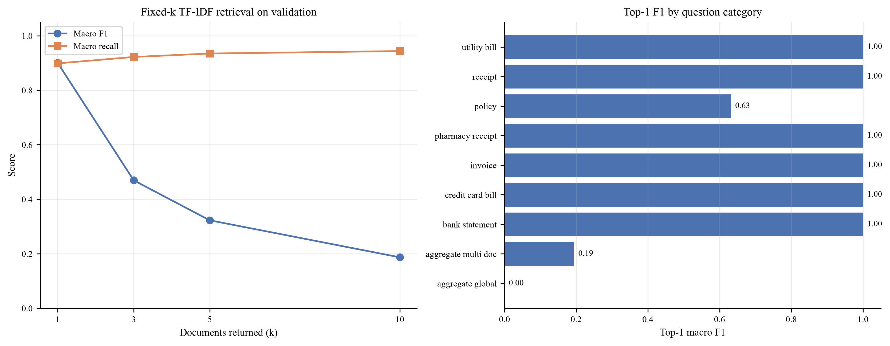
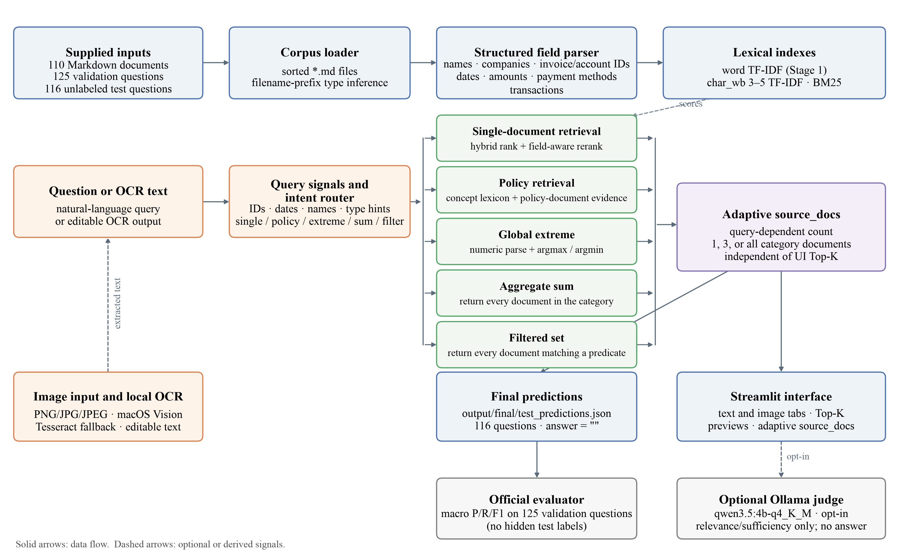
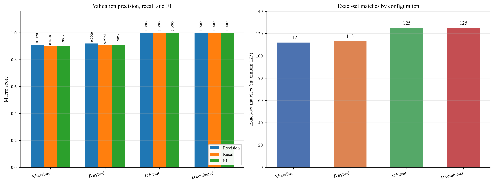
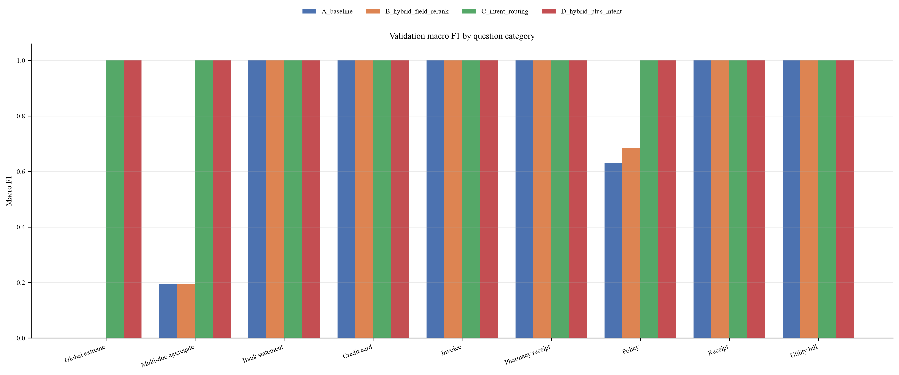

Document Retrieval with Hybrid Search & Intent Routing
Midterm programming project · 23 October 2026
1. Objective
The midterm programming task builds the retrieval stage of a RAG system: identify the document or complete document set needed to answer a question. Inputs may be text or images; the interface supports configurable Top-K results and an optional local language-model judge.
Evaluation compares predicted source_docs with ground-truth document sets using macro precision, recall and F1. Final answer generation is outside the task: the JSON answer field stays empty.
Saved validation result: macro F1 improves from 0.9007 to 1.0000, with exact document-set matches rising from 112/125 to 125/125. Hidden test labels are unavailable, so no test F1 is claimed.
2. Dataset & Evaluation Protocol
| Document type | Count |
|---|---|
| Credit-card bills | 25 |
| Invoices | 25 |
| Store receipts | 25 |
| Bank statements | 10 |
| Utility bills | 10 |
| Pharmacy receipts | 5 |
| Policy documents | 10 |
| Total | 110 |
The corpus contains 110 documents, averaging 101.96 words. The validation set contains 125 questions and 144 ground-truth document links: 122 questions require one document and three require multiple documents. The separate test set contains 116 unlabelled questions.
For each question, precision is the fraction of retrieved documents that are relevant, recall is the fraction of required documents retrieved, and F1 is their harmonic mean. Scores are averaged across questions. Exact match requires the entire predicted set to equal the ground-truth set.
Algorithm selection uses validation results only. The saved official evaluator scored all 125 validation questions with no unmatched or skipped questions.
3. TF-IDF Baseline
The baseline uses word unigrams and bigrams, sublinear term frequency, English stop words and cosine similarity. Top-1 is the primary output; larger fixed values of K are diagnostic comparisons. No neural embedding model is needed.
| K | Macro precision | Macro recall | Macro F1 | Exact matches |
|---|---|---|---|---|
| 1 | 0.9120 | 0.8988 | 0.9007 | 112/125 |
| 3 | 0.3253 | 0.9224 | 0.4695 | 0/125 |
| 5 | 0.2032 | 0.9350 | 0.3228 | 0/125 |
| 10 | 0.1096 | 0.9440 | 0.1870 | 1/125 |


Increasing K raises recall slightly but introduces irrelevant documents for the many single-document questions. Top-1 gives the best F1 among these settings; a fixed K cannot reliably represent both single-document and aggregate queries.
4. Two Retrieval Improvements
Improvement 1: hybrid retrieval and field-aware reranking
Word TF-IDF, character char_wb 3–5 gram TF-IDF and BM25 are normalized per query and combined with weights 0.45 / 0.40 / 0.15. BM25 uses k1=1.5 and b=0.75. Parsed identifiers, names, companies, dates and document types add exact-match evidence to the ranking.
Identifier matches receive +2.0, names +0.8, companies +0.6, primary dates +0.45 each (capped at +0.8), and document-type hints +0.15. The implementation uses reusable field extraction rather than question-to-document lookup tables.
Improvement 2: intent-aware structured retrieval
The router distinguishes single-document facts, policy paraphrases, global extrema, aggregate sums and filtered sets. Policy concepts address lexical mismatch; numerical parsing supports extrema; sums return every document in a category; filters return every matching document. Unmatched structured branches fall back to the best single document.
The recommended evidence set is adaptive and independent of the UI Top-K display count.


5. Validation Comparison
| Configuration | Precision | Recall | F1 | Exact matches | Mean docs |
|---|---|---|---|---|---|
| A · Baseline | 0.9120 | 0.8988 | 0.9007 | 112/125 | 1.000 |
| B · Hybrid + field rerank | 0.9200 | 0.9068 | 0.9087 | 113/125 | 1.000 |
| C · Intent routing | 1.0000 | 1.0000 | 1.0000 | 125/125 | 1.152 |
| D · Hybrid + intent | 1.0000 | 1.0000 | 1.0000 | 125/125 | 1.152 |


Improvement 1 alone increases F1 by 0.0080 and adds one exact match overall. Improvement 2 alone increases F1 by 0.0993 and resolves all 13 baseline failures on this validation set.
C and D tie. D was chosen using the documented tie-break after F1, precision, recall and exact matches. The combined system has no measured validation advantage over C; the two improvements are not claimed to be additive.
6. Error Analysis
| Category | n | A | B | C | D |
|---|---|---|---|---|---|
| Credit-card bills | 25 | 1.0000 | 1.0000 | 1.0000 | 1.0000 |
| Invoices | 25 | 1.0000 | 1.0000 | 1.0000 | 1.0000 |
| Store receipts | 25 | 1.0000 | 1.0000 | 1.0000 | 1.0000 |
| Bank statements | 10 | 1.0000 | 1.0000 | 1.0000 | 1.0000 |
| Utility bills | 10 | 1.0000 | 1.0000 | 1.0000 | 1.0000 |
| Pharmacy receipts | 5 | 1.0000 | 1.0000 | 1.0000 | 1.0000 |
| Policy | 19 | 0.6316 | 0.6842 | 1.0000 | 1.0000 |
| Multi-document aggregate | 3 | 0.1939 | 0.1939 | 1.0000 | 1.0000 |
| Global extreme | 3 | 0.0000 | 0.0000 | 1.0000 | 1.0000 |


All four configurations retrieve the correct evidence for the 100 structured single-document questions. The baseline misses seven policy questions, three global extrema and three multi-document aggregates.
Hybrid retrieval fixes q101 and q113 but regresses q117, leaving 12 imperfect predictions. Intent routing resolves the policy and dataset-level failures on validation. The remaining concern is generalization to unfamiliar phrasing and document templates.
7. Local Web Application & LLM Judge
The Streamlit application provides text and PNG/JPG/JPEG query inputs, editable OCR text, ranked document previews and expandable contents. Top-K options include 10 and 20. Adaptive source_docs are displayed separately, so an aggregate query can recommend 25 documents while the UI displays ten ranked cards.
The saved OCR test used macOS Vision: the invoice identifier was preserved and the correct document ranked first, although a date was misread. A blank image produced an explicit OCR error. The implementation also supports a Tesseract executable.
Optional local judge
Ollama model qwen3.5:4b-q4_K_M checks evidence relevance and sufficiency only. It is disabled by default and called only after enabling the option and pressing the evaluation button. It does not generate answers or change source_docs.
Each run considers at most three documents, with 2,200 characters per document, a 2,048-token context and a 120-token output limit. A saved one-document test returned “Acceptable: Yes” and took about 14 seconds on the local M1 / 8 GB machine.
The archived Stage 3 suite passed 28/28 checks, including text retrieval, Top-10/20 display, OCR, disabled-judge behavior, an actual local judge call and regression checks. The upload widget itself was not browser-automated; its OCR/retrieval functions were tested end to end.
This portfolio is a static results page. To run the interactive application, follow the local setup guide.
8. Final Test Output & Integrity Checks
| Retrieval route | Questions |
|---|---|
| Hybrid single-document | 100 |
| Policy intent | 10 |
| Global extreme | 3 |
| Aggregate sum | 2 |
| Filtered set | 1 |
| Total | 116 |
Configuration D generated 116 entries in the original question order. Of these, 113 return one source document, two return 25 documents and one returns three. Each entry has exactly id, question, source_docs and an empty answer.
Saved checks verified unique IDs, exact question text and order, existing source filenames, no duplicate sources, non-empty evidence sets and 35/35 identifier consistency checks. An independent raw-document audit agreed with all six dataset-level predictions.
The prediction SHA-256 was unchanged across the recorded Stage 3 regression checks. These checks establish output integrity; hidden test accuracy remains unknown. The public check summary records the counts and checksum.
9. Reproducible Prompt & Project Files
The final 440-word prompt captures the baseline, hybrid weights, intent routing, validation-only selection, output schema, app behavior and verification steps. It describes the original exam setup and stays within the task's 500-word limit.
Read the final reproducible prompt (440 words)
- Source code and local setup
- Validation comparison (CSV) and detailed aggregate metrics (JSON)
- Archived smoke-test summary
- Prompt and design explanation
The source snapshot preserves the original implementation. Running it requires the course-provided data and local dependencies described in the setup guide. This page is based on the final report and saved exam results; no model or retrieval experiment was rerun for publication.
10. Limitations & Conclusion
- Perfect validation performance saturates this small set and does not establish hidden test performance.
- Policy vocabulary and intent rules are finite; unseen paraphrases can fall back to lexical ranking.
- Field parsing depends on document templates, and OCR can misread dates and punctuation.
- The optional 4B judge adds latency and memory pressure and can vary between runs.
- The archived checks cover app logic and OCR, but do not establish browser upload-widget coverage.
The strongest measured gain comes from matching retrieval behavior to question intent. Hybrid lexical scoring helps modestly on its own, while structured routing handles policy, extrema and multi-document evidence. The resulting system combines transparent retrieval with a local text/image interface and an optional evidence judge.